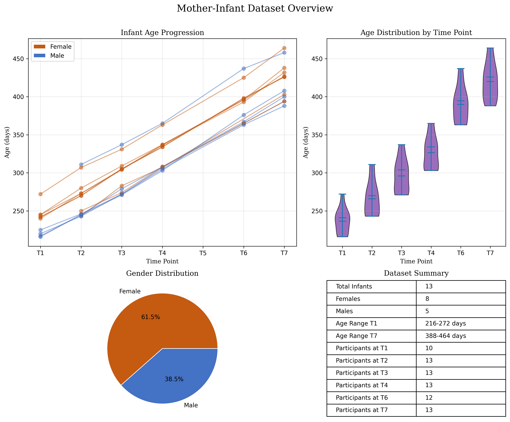

The following data has been made available in masked form.
Download Guide ⬇️
The masked data can be downloaded from the repository of Jagellonian University here. The unmasked data can be requested from the authors. The unmasked data is not available in this repository for privacy reasons.
Dataset Mother Infant
Code
import matplotlibmatplotlib.use('agg')import matplotlib.pyplot as pltplt.ioff()plt.clf() # Clear any existing figuresimport pandas as pdimport numpy as npimport os# Load the datadf = pd.read_csv('./meta/project_point_metadata_ages.csv')# Convert gender to categorical labeldf['gender_label'] = df['gender'].map({0: 'Female', 1: 'Male'})# Create a 2x2 subplot layoutfig, axs = plt.subplots(2, 2, figsize=(12, 10), gridspec_kw={'width_ratios': [1.5, 1], 'height_ratios': [1.5, 1]})fig.suptitle('Mother-Infant Dataset Overview', fontsize=16, fontfamily='serif')# Define colors for gendercolors = {'Female': '#C55A11', # Orange for females'Male': '#4472C4'# Blue for males}# 1. Line plot - Age progression across time pointsfor idx, row in df.iterrows(): gender = row['gender_label']# Create arrays for days and time points, handling NaN values days = [] timepoints = []for i inrange(1, 8): # T1 to T7 day_col =f'age_T{i}_days'if day_col in df.columns and pd.notna(row[day_col]) and row[day_col] >0: days.append(row[day_col]) timepoints.append(i)# Plot the line for this infant axs[0, 0].plot( timepoints, days, marker='o', color=colors[gender], alpha=0.5, linewidth=1.5 )# Customize the plotaxs[0, 0].set_xlabel('Time Point', fontfamily='serif')axs[0, 0].set_ylabel('Age (days)', fontfamily='serif')axs[0, 0].set_title('Infant Age Progression', fontfamily='serif')axs[0, 0].set_xticks(range(1, 8))axs[0, 0].set_xticklabels([f'T{i}'for i inrange(1, 8)])axs[0, 0].grid(True, alpha=0.3)# Add legend patchesfrom matplotlib.patches import Patchlegend_elements = [ Patch(facecolor=colors['Female'], edgecolor='w', label='Female'), Patch(facecolor=colors['Male'], edgecolor='w', label='Male')]axs[0, 0].legend(handles=legend_elements, loc='upper left')# 2. Box plot - Age distribution at each time pointtime_point_data = []labels = []for i inrange(1, 8): # T1 to T7 col =f'age_T{i}_days'if col in df.columns: valid_data = df[col].dropna()iflen(valid_data) >0: time_point_data.append(valid_data) labels.append(f'T{i}')# Create violin plotsif time_point_data: violin_parts = axs[0, 1].violinplot( time_point_data, showmeans=True, showmedians=True )# Color the violin plotsfor i, pc inenumerate(violin_parts['bodies']): pc.set_facecolor('#7030A0') # Purple pc.set_edgecolor('black') pc.set_alpha(0.7)# Set labelsaxs[0, 1].set_xticks(range(1, len(labels) +1))axs[0, 1].set_xticklabels(labels)axs[0, 1].set_xlabel('Time Point', fontfamily='serif')axs[0, 1].set_ylabel('Age (days)', fontfamily='serif')axs[0, 1].set_title('Age Distribution by Time Point', fontfamily='serif')axs[0, 1].grid(True, alpha=0.3, axis='y')# 3. Pie chart - Gender distributiongender_counts = df['gender_label'].value_counts()axs[1, 0].pie( gender_counts, labels=gender_counts.index, autopct='%1.1f%%', colors=[colors[g] for g in gender_counts.index], wedgeprops={'edgecolor': 'w', 'linewidth': 1})axs[1, 0].set_title('Gender Distribution', fontfamily='serif')# 4. Summary table# Calculate averages for each time point, handling NaN valuesaverages_days = []for i inrange(1, 8): col =f'age_T{i}_days'if col in df.columns: avg = df[col].mean()ifnot pd.isna(avg): avg_months = avg /30.44# Convert to months averages_days.append([f"T{i} Average Age", f"{avg:.1f} days ({avg_months:.1f} months)"])# Count participants at each time pointparticipants = []for i inrange(1, 8): col =f'age_T{i}_days'if col in df.columns: count = df[col].notna().sum() participants.append([f"Participants at T{i}", f"{count}"])# Overall statisticssummary_data = [ ["Total Infants", f"{len(df)}"], ["Females", f"{(df['gender'] ==0).sum()}"], ["Males", f"{(df['gender'] ==1).sum()}"]]# Add age ranges if columns existif'age_T1_days'in df.columns: summary_data.append(["Age Range T1", f"{df['age_T1_days'].min():.0f}-{df['age_T1_days'].max():.0f} days"])last_tp =7while last_tp >0: col =f'age_T{last_tp}_days'if col in df.columns and df[col].notna().sum() >0: summary_data.append([f"Age Range T{last_tp}", f"{df[col].min():.0f}-{df[col].max():.0f} days"])break last_tp -=1# Create the table with the most important summary statisticsaxs[1, 1].axis('off')table = axs[1, 1].table( cellText=summary_data + participants, loc='center', cellLoc='left')table.auto_set_font_size(False)table.set_fontsize(10)table.scale(1, 1.5)axs[1, 1].set_title('Dataset Summary', fontfamily='serif')plt.tight_layout()plt.subplots_adjust(top=0.9)# Save the figure to a fileoutput_path ="images/mother_infant_analysis.png"os.makedirs(os.path.dirname(output_path), exist_ok=True)plt.savefig(output_path, dpi=300, bbox_inches='tight')plt.close(fig) # Explicitly close the figure object

In our github repository we use a sample data from this dataset from an infant-mother pair whom we are allowed to share the video data for the current purposes.
Dataset Siblings
Code
import pandas as pdimport matplotlib.pyplot as pltimport numpy as npimport os# Load the datadf = pd.read_csv('./meta/project_siblings_metadata_ages_gender.csv')# Data preprocessingdf['AgeDifference'] =abs(df['P1agedays'] - df['P2agedays'])df['AverageAge'] = (df['P1agedays'] + df['P2agedays']) /2df['GenderCombo'] = df['GenderP1'] +'-'+ df['GenderP2']# Create a 2x2 subplot layoutfig, axs = plt.subplots(2, 2, figsize=(10, 8), gridspec_kw={'width_ratios': [1.5, 1], 'height_ratios': [1.5, 1]})fig.suptitle('Sibling Dataset Overview', fontsize=16, fontfamily='serif')# Define colors for gender combinationscolors = {'M-M': '#4472C4', # Blue'M-F': '#7030A0', # Purple'F-M': '#548235', # Green'F-F': '#C55A11'# Rust/Orange}# 1. Scatter plot - P1 age vs P2 agefor gender_combo, group in df.groupby('GenderCombo'): axs[0, 0].scatter( group['P1agedays'], group['P2agedays'], color=colors.get(gender_combo, 'gray'), alpha=0.7, label=gender_combo, s=50 )# Add reference linemin_age =min(df['P1agedays'].min(), df['P2agedays'].min())max_age =max(df['P1agedays'].max(), df['P2agedays'].max())axs[0, 0].plot([min_age, max_age], [min_age, max_age], 'k--', alpha=0.3)axs[0, 0].set_xlabel('P1 Age (days)', fontfamily='serif')axs[0, 0].set_ylabel('P2 Age (days)', fontfamily='serif')axs[0, 0].set_title('Participant Ages (P1 vs P2)', fontfamily='serif')axs[0, 0].grid(True, alpha=0.3)axs[0, 0].legend()# 2. Bar chart - Age differencesbar_positions = np.arange(len(df))bar_width =0.8axs[0, 1].bar( bar_positions, df['AgeDifference'], width=bar_width, color=[colors.get(combo, 'gray') for combo in df['GenderCombo']])axs[0, 1].set_xticks(bar_positions)axs[0, 1].set_xticklabels(df['Code'], rotation=90)axs[0, 1].set_xlabel('Sibling Pair', fontfamily='serif')axs[0, 1].set_ylabel('Age Difference (days)', fontfamily='serif')axs[0, 1].set_title('Age Differences by Sibling Pair', fontfamily='serif')axs[0, 1].grid(True, alpha=0.3, axis='y')# 3. Pie chart - Gender distributiongender_counts = df['GenderCombo'].value_counts()axs[1, 0].pie( gender_counts, labels=gender_counts.index, autopct='%1.1f%%', colors=[colors.get(combo, 'gray') for combo in gender_counts.index], wedgeprops={'edgecolor': 'w', 'linewidth': 1})axs[1, 0].set_title('Gender Distribution', fontfamily='serif')# 4. Summary tablesummary_data = [ ["Total Sibling Pairs", f"{len(df)}"], ["Average P1 Age", f"{df['P1agedays'].mean()/30:.1f} months"], ["Average P2 Age", f"{df['P2agedays'].mean()/30:.1f} months"], ["Average Age Difference", f"{df['AgeDifference'].mean()/30:.1f} months"], ["Number of Males", f"{(df['GenderP1'] =='M').sum() + (df['GenderP2'] =='M').sum()}"], ["Number of Females", f"{(df['GenderP1'] =='F').sum() + (df['GenderP2'] =='F').sum()}"]]# Turn off axis for tableaxs[1, 1].axis('off')table = axs[1, 1].table( cellText=[row for row in summary_data], colLabels=["Measure", "Value"], loc='center', cellLoc='left')table.auto_set_font_size(False)table.set_fontsize(10)table.scale(1, 1.5)axs[1, 1].set_title('Dataset Summary', fontfamily='serif')plt.tight_layout()plt.subplots_adjust(top=0.9)# Save the figure to a fileoutput_path ="images/sibling_analysis.png"os.makedirs(os.path.dirname(output_path), exist_ok=True)plt.savefig(output_path, dpi=300, bbox_inches='tight')plt.close()
Setting up 🛠️
Motion tracking and signal processing and wrangling
The motion tracking and signal processing pipeline is divided into two main steps: 1. Tracking: This step involves tracking the movements of individuals in the videos using a pose estimation model. The output is a video with annotated keypoints and a CSV file containing the coordinates of these keypoints. 2. Signal Processing: This step involves processing the keypoint data to extract relevant features for analysis. The output are processed timeseries files, and a flat dataset containing our smoothness measures that are directly ready for statistical analysis.
Step 1: Tracking two persons in videos for top-view (Python)
We have tried several pose tracking solutions, such as OpenPose (model 25B; Cao et al. (2021)), Mediapipe (default highest complexity blazepose model; Lugaresi et al. (2019)) and we found that these models are not well equipped to track persons from top view, most likely because these models are not trained on ground-truth poses of persons from top-view camera angles. However, we found the heaviest model of yolo v8 (“yolov8x-pose-p6.pt”) does perform very well, especially as compared to the other models we tested. Thus, for this pipeline we recommend using YOLOv8 model for top-view tracking.
Installation Guide 🛠️
Step 0: Github repo
We assume you have cloned the repository InterPerDynPipeline and are in the root directory. The step 1 code for tracking is in the ./code_STEP1_posetrackingprocessing/ folder. In this folder you will find the Python script yolo_tracking_processing.py. To check whether you have the correct script you can compare against the code chunk provided below.
Step 1: Install requirements
For each script we have provided a requirements.txt file. You can install the requirements using pip, by first navigating to the folder where the script is located and then running the following command in your terminal:
In the current GitHub repo we have a light-weight model yolov8n-pose.pt (~6.5MB) for immediate testing of the code. However, this model is not as accurate as the heaviest model.
We should download the heaviest model (yolov8x-pose-p6.pt) and save it to the ./code_STEP1_posetrackingprocessing/model/ directory:
https://github.com/ultralytics/assets/releases/download/v8.1.0/yolov8x-pose-p6.pt
Note: If you’re running the heavyweight model, you will need GPU support for this to run in a reasonable time. The lightweight model can run on CPU.
Step 3: Run the python script
Assuming you have videos in your data folder (./data_raw/) and you have a .pt model in the model folder, you can run the script using the following command:
The code below is the script yolo_tracking_processing.py that you can run to track the videos. The output will be a video with annotated keypoints and a CSV file containing the coordinates of these keypoints. The script processes each video frame-by-frame, detecting people and their pose keypoints (17 points as listed in the script; see the GetKeypoint class). We filter out duplicate detections or skeletons with excessive missing data. Specifically, for each processed video, the script generates two output files: an annotated video showing the original footage with skeleton overlays (green points for accepted keypoints, red for filtered ones, and blue lines connecting the points), and a CSV file containing the raw coordinate data (frame number, person ID, keypoint ID, x-coordinate, y-coordinate). The output filenames include parameters like “c150” (150px proximity threshold) and “miss95” (95% missing data tolerance), which control how the system handles potential duplicate detections and incomplete skeletons. The user could adjust the parameter close_threshold and miss_tolerance to adjust the detection dynamics. We output the annotated video and the CSV file in the ./datatracked_afterSTEP1/ folder.
Code
from ultralytics import YOLOfrom pydantic import BaseModelimport cv2import csvimport numpy as npimport globimport osimport torch # for gpu supportfrom itertools import combinationsimport systorch.cuda.set_device(0)# Load the modelmodelfolder ='./model/'modellocation = glob.glob(modelfolder+"*.pt")[0]modelfile = os.path.basename(modellocation)print(f"We are loading in the following YOLO model: {modelfile}")model = YOLO(modellocation)# main variablesvideo_folder ="../data_raw/"# avi mp4 or other video formatsvideo_files = glob.glob(video_folder +"*.mp4") + glob.glob(video_folder +"*.avi") + glob.glob(video_folder +"*.mov") + glob.glob(video_folder +"*.mkv")step1resultfolder ="../datatracked_afterSTEP1/"print(video_files)# keypoint namesclass GetKeypoint(BaseModel): NOSE: int=0 LEFT_EYE: int=1 RIGHT_EYE: int=2 LEFT_EAR: int=3 RIGHT_EAR: int=4 LEFT_SHOULDER: int=5 RIGHT_SHOULDER: int=6 LEFT_ELBOW: int=7 RIGHT_ELBOW: int=8 LEFT_WRIST: int=9 RIGHT_WRIST: int=10 LEFT_HIP: int=11 RIGHT_HIP: int=12 LEFT_KNEE: int=13 RIGHT_KNEE: int=14 LEFT_ANKLE: int=15 RIGHT_ANKLE: int=16get_keypoint = GetKeypoint()# Define skeleton connectionsskeleton = [ (get_keypoint.LEFT_SHOULDER, get_keypoint.RIGHT_SHOULDER), (get_keypoint.LEFT_SHOULDER, get_keypoint.LEFT_ELBOW), (get_keypoint.RIGHT_SHOULDER, get_keypoint.RIGHT_ELBOW), (get_keypoint.LEFT_ELBOW, get_keypoint.LEFT_WRIST), (get_keypoint.RIGHT_ELBOW, get_keypoint.RIGHT_WRIST), (get_keypoint.LEFT_SHOULDER, get_keypoint.LEFT_HIP), (get_keypoint.RIGHT_SHOULDER, get_keypoint.RIGHT_HIP), (get_keypoint.LEFT_HIP, get_keypoint.RIGHT_HIP), (get_keypoint.LEFT_HIP, get_keypoint.LEFT_KNEE), (get_keypoint.RIGHT_HIP, get_keypoint.RIGHT_KNEE), (get_keypoint.LEFT_KNEE, get_keypoint.LEFT_ANKLE), (get_keypoint.RIGHT_KNEE, get_keypoint.RIGHT_ANKLE),]def tensor_to_matrix(results_tensor):# this just takes the results output of YOLO and coverts it to a matrix,# making it easier to do quick calculations on the coordinates results_list = results_tensor.tolist() results_matrix = np.matrix(results_list) results_matrix[results_matrix==0] = np.nanreturn results_matrixdef check_for_duplication(results):# this threshold determines how close two skeletons must be in order to be# considered the same person. Arbitrarily chosen for now. close_threshold =150# missing data tolerance miss_tolerance =0.95# this means we can miss up to 75% of the keypoints drop_indices = []iflen(results[0].keypoints.xy) >1: conf_scores = []# get detection confidence for each skeletonfor person in tensor_to_matrix(results[0].keypoints.conf): conf_scores.append(np.mean(person))# this list will stores which comparisons need to be made combos =list(combinations(range(len(results[0].keypoints.xy)), 2))# now loop through these comparisonsfor combo in combos: closeness =abs(np.nanmean(tensor_to_matrix(results[0].keypoints.xy[combo[0]]) - tensor_to_matrix(results[0].keypoints.xy[combo[1]])))# if any of them indicate that two skeletons are very close together,# we keep the one with higher tracking confidence, and remove the otherif closeness < close_threshold: conf_list = [conf_scores[combo[0]], conf_scores[combo[1]]] idx_min = conf_list.index(min(conf_list)) drop_indices.append(combo[idx_min])# additional checks:for person inrange(len(results[0].keypoints.xy)): keypoints_missed = np.isnan(tensor_to_matrix(results[0].keypoints.xy[person])).sum()/2 perc_missed = keypoints_missed/len(tensor_to_matrix(results[0].keypoints.xy[person]))if perc_missed > miss_tolerance: drop_indices.append(person)returnlist(set(drop_indices))for video_path in video_files:# Video path video_path = video_path# only if the output is not there yetif os.path.exists(step1resultfolder+ os.path.basename(video_path).split('.')[0]+"_annotated_layer1_c150_miss95.mp4"):print(f"Output video already exists for {video_path}. Skipping...")continue# vidname without extension vidname = os.path.basename(video_path) vidname = vidname.split('.')[0]# Open the video cap = cv2.VideoCapture(video_path)# Get video properties fps =int(cap.get(cv2.CAP_PROP_FPS)) width =int(cap.get(cv2.CAP_PROP_FRAME_WIDTH)) height =int(cap.get(cv2.CAP_PROP_FRAME_HEIGHT))# Define the output video writer corename = os.path.basename(video_path).split('.')[0] output_path = step1resultfolder+ vidname+"_annotated_layer1_c150_miss95.mp4" fourcc = cv2.VideoWriter_fourcc(*'mp4v') out = cv2.VideoWriter(output_path, fourcc, fps, (width, height))# Prepare CSV file csv_path = step1resultfolder+ vidname+'_keypoints_data_layer1.csv' csv_file =open(csv_path, 'w', newline='') csv_writer = csv.writer(csv_file)# Write header header = ['frame', 'person', 'keypoint', 'x', 'y'] csv_writer.writerow(header) frame_count =0while cap.isOpened(): success, frame = cap.read()ifnot success:break# Run YOLOv8 inference on the frame results = model(frame)# write empty rows if no person is detectediflen(results[0].keypoints.xy) ==0: csv_writer.writerow([frame_count, None, None, None, None]) annotated_frame = frame# only do this if a person is detectediflen(results[0].keypoints.xy) >0:# Process the results drop_indices = [] drop_indices = check_for_duplication(results)for person_idx, person_keypoints inenumerate(results[0].keypoints.xy):if person_idx notin drop_indices: colourcode = (0, 255, 0)else: colourcode = (255, 0, 0)for keypoint_idx, keypoint inenumerate(person_keypoints): x, y = keypoint# Write to CSV csv_writer.writerow([frame_count, person_idx, keypoint_idx, x.item(), y.item()])# Draw keypoint on the frame cv2.circle(annotated_frame, (int(x), int(y)), 5, colourcode, -1)# Draw skeletonfor connection in skeleton:if connection[0] <len(person_keypoints) and connection[1] <len(person_keypoints): start_point =tuple(map(int, person_keypoints[connection[0]])) end_point =tuple(map(int, person_keypoints[connection[1]]))ifall(start_point) andall(end_point): # Check if both points are valid cv2.line(annotated_frame, start_point, end_point, (255, 0, 0), 2)# Write the frame to the output video out.write(annotated_frame) frame_count +=1# Release everything cap.release() out.release() cv2.destroyAllWindows() csv_file.close()print(f"Output video saved as {output_path}")print(f"Keypoints data saved as {csv_path}")
Here is an example of the output video with annotated keypoints and skeletons. The green points indicate accepted keypoints, while the red points indicate filtered ones. The blue lines connect the keypoints to form a skeleton.
Here is an example of the output csv file containing the coordinates of the keypoints. The CSV file contains the following columns: frame number, person ID, keypoint ID, x-coordinate, and y-coordinate. Each row corresponds to a detected keypoint in a specific frame.
Code
import pandas as pdimport glob as globfolderstep1output ="./datatracked_afterSTEP1/"# Load the CSV filecsv_file = glob.glob(folderstep1output +"*.csv")[0]df = pd.read_csv(csv_file)# Display the first few rows of the DataFrameprint(df.head())
Step 2: Timeseries preparation and flat data for statistics
Statistical analysis on smoothness derived from timeseries analysis (R)
Code
# manually edited this CSVdata <-read.csv("C:/Users/wiltshir/GitHub/InterPerDynPipelineAnalysis/Re_ Behavioral Dynamics in Social Interactions AP_SI/smoothness_data_top_view_clean.csv") #data_cross_cultur<-data[1:18,]# Remove a rowdata<-subset(data, data$videoID!="cop_b09 z góry")# Add a culture grouping variabledata$culture <-ifelse(grepl("góry$", data$videoID), "Yurakare",ifelse(grepl("kam_5$", data$videoID), "Polish", NA))# Restructure data into long formatlibrary(dplyr)library(tidyr)data_long <- data %>%pivot_longer(cols =c(smoothness_p1_proximity, smoothness_p2_proximity),names_to ="person",values_to ="smoothness_value")library(lme4) library(lmerTest) model1 <-lmer(smoothness_value ~ culture + (1| videoID), data = data_long)summary(model1)
Statistical analysis on measures derived from non-linear time series analysis
References
Cao, Zhe, Gines Hidalgo, Tomas Simon, Shih-En Wei, and Yaser Sheikh. 2021. “OpenPose: Realtime Multi-Person 2D Pose Estimation Using Part Affinity Fields.”IEEE Transactions on Pattern Analysis and Machine Intelligence 43 (1): 172–86. https://doi.org/10.1109/TPAMI.2019.2929257.
Lugaresi, Camillo, Jiuqiang Tang, Hadon Nash, Chris McClanahan, Esha Uboweja, Michael Hays, Fan Zhang, et al. 2019. “MediaPipe: A Framework for Building Perception Pipelines.” arXiv. https://doi.org/10.48550/arXiv.1906.08172.
Owoyele, Babajide Alamu, Martin Schilling, Rohan Sawahn, Niklas Kaemer, Pavel Zherebenkov, Bhuvanesh Verma, Wim Pouw, and Gerard de Melo. 2024. “MaskAnyone Toolkit: Offering Strategies for Minimizing Privacy Risks and Maximizing Utility in Audio-Visual Data Archiving.” arXiv. https://doi.org/10.48550/arXiv.2408.03185.
Source Code
---title: "An Open-source Standardized Pipeline for Tracing the Behavioral Dynamics in Social Interactions"subtitle: "Computationally Reproducible Extended Methods Section"date: "`r format(Sys.time(), '%B %d, %Y')`"author: - name: Arkadiusz Białek affiliation: Jagiellonian University, Poland - name: Wim Pouw affiliation: Tilburg University, Netherlands - name: Travis J. Wiltshire affiliation: Tilburg University, Netherlands - name: James Trujillo affiliation: University of Amsterdam, USA - name: Fred Hasselman affiliation: Radboud University, Netherlands - name: Babajide Alamu Owoyele affiliation: Hasso Plattner Institute, University of Potsdam, Germany - name: Natalia Siekiera affiliation: Jagiellonian University, Poland - name: Joanna Rączaszek-Leonardi affiliation: University of Warsaw, Polandcontact: - name: Wim Pouw email: w.pouw@tilburguniversity.edubibliography: quarto_dependencies/references/refs.bibtheme: journalcss: quarto_dependencies/styles/styles.cssformat: html: code-fold: true code-tools: true # Adds a code button to toggle all code---# OverviewTo increase privacy we apply maskanyone [@owoyeleMaskAnyoneToolkitOffering2024].# DatasetThe following data has been made available in masked form.::: {.callout-note .callout-download collapse="true"}## Download Guide ⬇️The masked data can be downloaded from the repository of Jagellonian University [here](). The unmasked data can be requested from the authors. The unmasked data is not available in this repository for privacy reasons.:::### Dataset Mother Infant```{python, eval=FALSE, code_folding="hide"}import matplotlibmatplotlib.use('agg')import matplotlib.pyplot as pltplt.ioff()plt.clf() # Clear any existing figuresimport pandas as pdimport numpy as npimport os# Load the datadf = pd.read_csv('./meta/project_point_metadata_ages.csv')# Convert gender to categorical labeldf['gender_label'] = df['gender'].map({0: 'Female', 1: 'Male'})# Create a 2x2 subplot layoutfig, axs = plt.subplots(2, 2, figsize=(12, 10), gridspec_kw={'width_ratios': [1.5, 1], 'height_ratios': [1.5, 1]})fig.suptitle('Mother-Infant Dataset Overview', fontsize=16, fontfamily='serif')# Define colors for gendercolors = {'Female': '#C55A11', # Orange for females'Male': '#4472C4'# Blue for males}# 1. Line plot - Age progression across time pointsfor idx, row in df.iterrows(): gender = row['gender_label']# Create arrays for days and time points, handling NaN values days = [] timepoints = []for i inrange(1, 8): # T1 to T7 day_col =f'age_T{i}_days'if day_col in df.columns and pd.notna(row[day_col]) and row[day_col] >0: days.append(row[day_col]) timepoints.append(i)# Plot the line for this infant axs[0, 0].plot( timepoints, days, marker='o', color=colors[gender], alpha=0.5, linewidth=1.5 )# Customize the plotaxs[0, 0].set_xlabel('Time Point', fontfamily='serif')axs[0, 0].set_ylabel('Age (days)', fontfamily='serif')axs[0, 0].set_title('Infant Age Progression', fontfamily='serif')axs[0, 0].set_xticks(range(1, 8))axs[0, 0].set_xticklabels([f'T{i}'for i inrange(1, 8)])axs[0, 0].grid(True, alpha=0.3)# Add legend patchesfrom matplotlib.patches import Patchlegend_elements = [ Patch(facecolor=colors['Female'], edgecolor='w', label='Female'), Patch(facecolor=colors['Male'], edgecolor='w', label='Male')]axs[0, 0].legend(handles=legend_elements, loc='upper left')# 2. Box plot - Age distribution at each time pointtime_point_data = []labels = []for i inrange(1, 8): # T1 to T7 col =f'age_T{i}_days'if col in df.columns: valid_data = df[col].dropna()iflen(valid_data) >0: time_point_data.append(valid_data) labels.append(f'T{i}')# Create violin plotsif time_point_data: violin_parts = axs[0, 1].violinplot( time_point_data, showmeans=True, showmedians=True )# Color the violin plotsfor i, pc inenumerate(violin_parts['bodies']): pc.set_facecolor('#7030A0') # Purple pc.set_edgecolor('black') pc.set_alpha(0.7)# Set labelsaxs[0, 1].set_xticks(range(1, len(labels) +1))axs[0, 1].set_xticklabels(labels)axs[0, 1].set_xlabel('Time Point', fontfamily='serif')axs[0, 1].set_ylabel('Age (days)', fontfamily='serif')axs[0, 1].set_title('Age Distribution by Time Point', fontfamily='serif')axs[0, 1].grid(True, alpha=0.3, axis='y')# 3. Pie chart - Gender distributiongender_counts = df['gender_label'].value_counts()axs[1, 0].pie( gender_counts, labels=gender_counts.index, autopct='%1.1f%%', colors=[colors[g] for g in gender_counts.index], wedgeprops={'edgecolor': 'w', 'linewidth': 1})axs[1, 0].set_title('Gender Distribution', fontfamily='serif')# 4. Summary table# Calculate averages for each time point, handling NaN valuesaverages_days = []for i inrange(1, 8): col =f'age_T{i}_days'if col in df.columns: avg = df[col].mean()ifnot pd.isna(avg): avg_months = avg /30.44# Convert to months averages_days.append([f"T{i} Average Age", f"{avg:.1f} days ({avg_months:.1f} months)"])# Count participants at each time pointparticipants = []for i inrange(1, 8): col =f'age_T{i}_days'if col in df.columns: count = df[col].notna().sum() participants.append([f"Participants at T{i}", f"{count}"])# Overall statisticssummary_data = [ ["Total Infants", f"{len(df)}"], ["Females", f"{(df['gender'] ==0).sum()}"], ["Males", f"{(df['gender'] ==1).sum()}"]]# Add age ranges if columns existif'age_T1_days'in df.columns: summary_data.append(["Age Range T1", f"{df['age_T1_days'].min():.0f}-{df['age_T1_days'].max():.0f} days"])last_tp =7while last_tp >0: col =f'age_T{last_tp}_days'if col in df.columns and df[col].notna().sum() >0: summary_data.append([f"Age Range T{last_tp}", f"{df[col].min():.0f}-{df[col].max():.0f} days"])break last_tp -=1# Create the table with the most important summary statisticsaxs[1, 1].axis('off')table = axs[1, 1].table( cellText=summary_data + participants, loc='center', cellLoc='left')table.auto_set_font_size(False)table.set_fontsize(10)table.scale(1, 1.5)axs[1, 1].set_title('Dataset Summary', fontfamily='serif')plt.tight_layout()plt.subplots_adjust(top=0.9)# Save the figure to a fileoutput_path ="images/mother_infant_analysis.png"os.makedirs(os.path.dirname(output_path), exist_ok=True)plt.savefig(output_path, dpi=300, bbox_inches='tight')plt.close(fig) # Explicitly close the figure object```{fig-align="center" width=600}In our github repository we use a sample data from this dataset from an infant-mother pair whom we are allowed to share the video data for the current purposes.### Dataset Siblings```{python, eval=FALSE, code_folding="hide"}import pandas as pdimport matplotlib.pyplot as pltimport numpy as npimport os# Load the datadf = pd.read_csv('./meta/project_siblings_metadata_ages_gender.csv')# Data preprocessingdf['AgeDifference'] =abs(df['P1agedays'] - df['P2agedays'])df['AverageAge'] = (df['P1agedays'] + df['P2agedays']) /2df['GenderCombo'] = df['GenderP1'] +'-'+ df['GenderP2']# Create a 2x2 subplot layoutfig, axs = plt.subplots(2, 2, figsize=(10, 8), gridspec_kw={'width_ratios': [1.5, 1], 'height_ratios': [1.5, 1]})fig.suptitle('Sibling Dataset Overview', fontsize=16, fontfamily='serif')# Define colors for gender combinationscolors = {'M-M': '#4472C4', # Blue'M-F': '#7030A0', # Purple'F-M': '#548235', # Green'F-F': '#C55A11'# Rust/Orange}# 1. Scatter plot - P1 age vs P2 agefor gender_combo, group in df.groupby('GenderCombo'): axs[0, 0].scatter( group['P1agedays'], group['P2agedays'], color=colors.get(gender_combo, 'gray'), alpha=0.7, label=gender_combo, s=50 )# Add reference linemin_age =min(df['P1agedays'].min(), df['P2agedays'].min())max_age =max(df['P1agedays'].max(), df['P2agedays'].max())axs[0, 0].plot([min_age, max_age], [min_age, max_age], 'k--', alpha=0.3)axs[0, 0].set_xlabel('P1 Age (days)', fontfamily='serif')axs[0, 0].set_ylabel('P2 Age (days)', fontfamily='serif')axs[0, 0].set_title('Participant Ages (P1 vs P2)', fontfamily='serif')axs[0, 0].grid(True, alpha=0.3)axs[0, 0].legend()# 2. Bar chart - Age differencesbar_positions = np.arange(len(df))bar_width =0.8axs[0, 1].bar( bar_positions, df['AgeDifference'], width=bar_width, color=[colors.get(combo, 'gray') for combo in df['GenderCombo']])axs[0, 1].set_xticks(bar_positions)axs[0, 1].set_xticklabels(df['Code'], rotation=90)axs[0, 1].set_xlabel('Sibling Pair', fontfamily='serif')axs[0, 1].set_ylabel('Age Difference (days)', fontfamily='serif')axs[0, 1].set_title('Age Differences by Sibling Pair', fontfamily='serif')axs[0, 1].grid(True, alpha=0.3, axis='y')# 3. Pie chart - Gender distributiongender_counts = df['GenderCombo'].value_counts()axs[1, 0].pie( gender_counts, labels=gender_counts.index, autopct='%1.1f%%', colors=[colors.get(combo, 'gray') for combo in gender_counts.index], wedgeprops={'edgecolor': 'w', 'linewidth': 1})axs[1, 0].set_title('Gender Distribution', fontfamily='serif')# 4. Summary tablesummary_data = [ ["Total Sibling Pairs", f"{len(df)}"], ["Average P1 Age", f"{df['P1agedays'].mean()/30:.1f} months"], ["Average P2 Age", f"{df['P2agedays'].mean()/30:.1f} months"], ["Average Age Difference", f"{df['AgeDifference'].mean()/30:.1f} months"], ["Number of Males", f"{(df['GenderP1'] =='M').sum() + (df['GenderP2'] =='M').sum()}"], ["Number of Females", f"{(df['GenderP1'] =='F').sum() + (df['GenderP2'] =='F').sum()}"]]# Turn off axis for tableaxs[1, 1].axis('off')table = axs[1, 1].table( cellText=[row for row in summary_data], colLabels=["Measure", "Value"], loc='center', cellLoc='left')table.auto_set_font_size(False)table.set_fontsize(10)table.scale(1, 1.5)axs[1, 1].set_title('Dataset Summary', fontfamily='serif')plt.tight_layout()plt.subplots_adjust(top=0.9)# Save the figure to a fileoutput_path ="images/sibling_analysis.png"os.makedirs(os.path.dirname(output_path), exist_ok=True)plt.savefig(output_path, dpi=300, bbox_inches='tight')plt.close()```{fig-align="center" width=600}::: {.callout-note .callout-settingup collapse="true"}## Setting up 🛠️:::# Motion tracking and signal processing and wranglingThe motion tracking and signal processing pipeline is divided into two main steps: 1. **Tracking**: This step involves tracking the movements of individuals in the videos using a pose estimation model. The output is a video with annotated keypoints and a CSV file containing the coordinates of these keypoints.2. **Signal Processing**: This step involves processing the keypoint data to extract relevant features for analysis. The output are processed timeseries files, and a flat dataset containing our smoothness measures that are directly ready for statistical analysis.## Step 1: Tracking two persons in videos for top-view (Python)We have tried several pose tracking solutions, such as OpenPose (model 25B; @caoOpenPoseRealtimeMultiPerson2021), Mediapipe (default highest complexity blazepose model; @lugaresiMediaPipeFrameworkBuilding2019) and we found that these models are not well equipped to track persons from top view, most likely because these models are not trained on ground-truth poses of persons from top-view camera angles. However, we found the heaviest model of yolo v8 ("yolov8x-pose-p6.pt") does perform very well, especially as compared to the other models we tested. Thus, for this pipeline we recommend using YOLOv8 model for top-view tracking.::: {.callout-note .callout-installation collapse="true"}## Installation Guide 🛠️### Step 0: Github repoWe assume you have cloned the repository [InterPerDynPipeline](https://github.com/WimPouw/InterPerDynPipeline) and are in the root directory. The step 1 code for tracking is in the `./code_STEP1_posetrackingprocessing/` folder. In this folder you will find the Python script `yolo_tracking_processing.py`. To check whether you have the correct script you can compare against the code chunk provided below.### Step 1: Install requirementsFor each script we have provided a `requirements.txt` file. You can install the requirements using pip, by first navigating to the folder where the script is located and then running the following command in your terminal:```bashcd[yourspecificrootadress]/code_STEP1_posetrackingprocessing/pip install -r requirements.txt```### Step 2: Download the YOLOv8 modelIn the current GitHub repo we have a light-weight model `yolov8n-pose.pt` (~6.5MB) for immediate testing of the code. However, this model is not as accurate as the heaviest model.We should download the heaviest model (`yolov8x-pose-p6.pt`) and save it to the `./code_STEP1_posetrackingprocessing/model/` directory: https://github.com/ultralytics/assets/releases/download/v8.1.0/yolov8x-pose-p6.pt**Note**: If you're running the heavyweight model, you will need GPU support for this to run in a reasonable time. The lightweight model can run on CPU.### Step 3: Run the python scriptAssuming you have videos in your data folder (`./data_raw/`) and you have a `.pt` model in the model folder, you can run the script using the following command:```bashcd[yourspecificrootadress]/code_STEP1_posetrackingprocessing/python yolo_tracking_processing.py```:::The code below is the script `yolo_tracking_processing.py` that you can run to track the videos. The output will be a video with annotated keypoints and a CSV file containing the coordinates of these keypoints. The script processes each video frame-by-frame, detecting people and their pose keypoints (17 points as listed in the script; see the `GetKeypoint class`). We filter out duplicate detections or skeletons with excessive missing data. Specifically, for each processed video, the script generates two output files: an annotated video showing the original footage with skeleton overlays (green points for accepted keypoints, red for filtered ones, and blue lines connecting the points), and a CSV file containing the raw coordinate data (frame number, person ID, keypoint ID, x-coordinate, y-coordinate). The output filenames include parameters like "c150" (150px proximity threshold) and "miss95" (95% missing data tolerance), which control how the system handles potential duplicate detections and incomplete skeletons. The user could adjust the parameter `close_threshold` and `miss_tolerance` to adjust the detection dynamics. We output the annotated video and the CSV file in the `./datatracked_afterSTEP1/` folder.```{python, eval=FALSE, code_folding="hide"}from ultralytics import YOLOfrom pydantic import BaseModelimport cv2import csvimport numpy as npimport globimport osimport torch # for gpu supportfrom itertools import combinationsimport systorch.cuda.set_device(0)# Load the modelmodelfolder ='./model/'modellocation = glob.glob(modelfolder+"*.pt")[0]modelfile = os.path.basename(modellocation)print(f"We are loading in the following YOLO model: {modelfile}")model = YOLO(modellocation)# main variablesvideo_folder ="../data_raw/"# avi mp4 or other video formatsvideo_files = glob.glob(video_folder +"*.mp4") + glob.glob(video_folder +"*.avi") + glob.glob(video_folder +"*.mov") + glob.glob(video_folder +"*.mkv")step1resultfolder ="../datatracked_afterSTEP1/"print(video_files)# keypoint namesclass GetKeypoint(BaseModel): NOSE: int=0 LEFT_EYE: int=1 RIGHT_EYE: int=2 LEFT_EAR: int=3 RIGHT_EAR: int=4 LEFT_SHOULDER: int=5 RIGHT_SHOULDER: int=6 LEFT_ELBOW: int=7 RIGHT_ELBOW: int=8 LEFT_WRIST: int=9 RIGHT_WRIST: int=10 LEFT_HIP: int=11 RIGHT_HIP: int=12 LEFT_KNEE: int=13 RIGHT_KNEE: int=14 LEFT_ANKLE: int=15 RIGHT_ANKLE: int=16get_keypoint = GetKeypoint()# Define skeleton connectionsskeleton = [ (get_keypoint.LEFT_SHOULDER, get_keypoint.RIGHT_SHOULDER), (get_keypoint.LEFT_SHOULDER, get_keypoint.LEFT_ELBOW), (get_keypoint.RIGHT_SHOULDER, get_keypoint.RIGHT_ELBOW), (get_keypoint.LEFT_ELBOW, get_keypoint.LEFT_WRIST), (get_keypoint.RIGHT_ELBOW, get_keypoint.RIGHT_WRIST), (get_keypoint.LEFT_SHOULDER, get_keypoint.LEFT_HIP), (get_keypoint.RIGHT_SHOULDER, get_keypoint.RIGHT_HIP), (get_keypoint.LEFT_HIP, get_keypoint.RIGHT_HIP), (get_keypoint.LEFT_HIP, get_keypoint.LEFT_KNEE), (get_keypoint.RIGHT_HIP, get_keypoint.RIGHT_KNEE), (get_keypoint.LEFT_KNEE, get_keypoint.LEFT_ANKLE), (get_keypoint.RIGHT_KNEE, get_keypoint.RIGHT_ANKLE),]def tensor_to_matrix(results_tensor):# this just takes the results output of YOLO and coverts it to a matrix,# making it easier to do quick calculations on the coordinates results_list = results_tensor.tolist() results_matrix = np.matrix(results_list) results_matrix[results_matrix==0] = np.nanreturn results_matrixdef check_for_duplication(results):# this threshold determines how close two skeletons must be in order to be# considered the same person. Arbitrarily chosen for now. close_threshold =150# missing data tolerance miss_tolerance =0.95# this means we can miss up to 75% of the keypoints drop_indices = []iflen(results[0].keypoints.xy) >1: conf_scores = []# get detection confidence for each skeletonfor person in tensor_to_matrix(results[0].keypoints.conf): conf_scores.append(np.mean(person))# this list will stores which comparisons need to be made combos =list(combinations(range(len(results[0].keypoints.xy)), 2))# now loop through these comparisonsfor combo in combos: closeness =abs(np.nanmean(tensor_to_matrix(results[0].keypoints.xy[combo[0]]) - tensor_to_matrix(results[0].keypoints.xy[combo[1]])))# if any of them indicate that two skeletons are very close together,# we keep the one with higher tracking confidence, and remove the otherif closeness < close_threshold: conf_list = [conf_scores[combo[0]], conf_scores[combo[1]]] idx_min = conf_list.index(min(conf_list)) drop_indices.append(combo[idx_min])# additional checks:for person inrange(len(results[0].keypoints.xy)): keypoints_missed = np.isnan(tensor_to_matrix(results[0].keypoints.xy[person])).sum()/2 perc_missed = keypoints_missed/len(tensor_to_matrix(results[0].keypoints.xy[person]))if perc_missed > miss_tolerance: drop_indices.append(person)returnlist(set(drop_indices))for video_path in video_files:# Video path video_path = video_path# only if the output is not there yetif os.path.exists(step1resultfolder+ os.path.basename(video_path).split('.')[0]+"_annotated_layer1_c150_miss95.mp4"):print(f"Output video already exists for {video_path}. Skipping...")continue# vidname without extension vidname = os.path.basename(video_path) vidname = vidname.split('.')[0]# Open the video cap = cv2.VideoCapture(video_path)# Get video properties fps =int(cap.get(cv2.CAP_PROP_FPS)) width =int(cap.get(cv2.CAP_PROP_FRAME_WIDTH)) height =int(cap.get(cv2.CAP_PROP_FRAME_HEIGHT))# Define the output video writer corename = os.path.basename(video_path).split('.')[0] output_path = step1resultfolder+ vidname+"_annotated_layer1_c150_miss95.mp4" fourcc = cv2.VideoWriter_fourcc(*'mp4v') out = cv2.VideoWriter(output_path, fourcc, fps, (width, height))# Prepare CSV file csv_path = step1resultfolder+ vidname+'_keypoints_data_layer1.csv' csv_file =open(csv_path, 'w', newline='') csv_writer = csv.writer(csv_file)# Write header header = ['frame', 'person', 'keypoint', 'x', 'y'] csv_writer.writerow(header) frame_count =0while cap.isOpened(): success, frame = cap.read()ifnot success:break# Run YOLOv8 inference on the frame results = model(frame)# write empty rows if no person is detectediflen(results[0].keypoints.xy) ==0: csv_writer.writerow([frame_count, None, None, None, None]) annotated_frame = frame# only do this if a person is detectediflen(results[0].keypoints.xy) >0:# Process the results drop_indices = [] drop_indices = check_for_duplication(results)for person_idx, person_keypoints inenumerate(results[0].keypoints.xy):if person_idx notin drop_indices: colourcode = (0, 255, 0)else: colourcode = (255, 0, 0)for keypoint_idx, keypoint inenumerate(person_keypoints): x, y = keypoint# Write to CSV csv_writer.writerow([frame_count, person_idx, keypoint_idx, x.item(), y.item()])# Draw keypoint on the frame cv2.circle(annotated_frame, (int(x), int(y)), 5, colourcode, -1)# Draw skeletonfor connection in skeleton:if connection[0] <len(person_keypoints) and connection[1] <len(person_keypoints): start_point =tuple(map(int, person_keypoints[connection[0]])) end_point =tuple(map(int, person_keypoints[connection[1]]))ifall(start_point) andall(end_point): # Check if both points are valid cv2.line(annotated_frame, start_point, end_point, (255, 0, 0), 2)# Write the frame to the output video out.write(annotated_frame) frame_count +=1# Release everything cap.release() out.release() cv2.destroyAllWindows() csv_file.close()print(f"Output video saved as {output_path}")print(f"Keypoints data saved as {csv_path}")```Here is an example of the output video with annotated keypoints and skeletons. The green points indicate accepted keypoints, while the red points indicate filtered ones. The blue lines connect the keypoints to form a skeleton.<html><video width="300" height="200" controls><source src="./images/videosrerendered/sample.mp4" type="video/mp4"> Your browser does not support the video tag.</video></html>Here is an example of the output csv file containing the coordinates of the keypoints. The CSV file contains the following columns: frame number, person ID, keypoint ID, x-coordinate, and y-coordinate. Each row corresponds to a detected keypoint in a specific frame.```{python, code_folding="hide"}import pandas as pdimport glob as globfolderstep1output ="./datatracked_afterSTEP1/"# Load the CSV filecsv_file = glob.glob(folderstep1output +"*.csv")[0]df = pd.read_csv(csv_file)# Display the first few rows of the DataFrameprint(df.head())```## Step 2: Timeseries preparation and flat data for statistics# Statistical analysis on smoothness derived from timeseries analysis (R)```{r, eval=FALSE, code_folding="hide"}# manually edited this CSVdata <-read.csv("C:/Users/wiltshir/GitHub/InterPerDynPipelineAnalysis/Re_ Behavioral Dynamics in Social Interactions AP_SI/smoothness_data_top_view_clean.csv") #data_cross_cultur<-data[1:18,]# Remove a rowdata<-subset(data, data$videoID!="cop_b09 z góry")# Add a culture grouping variabledata$culture <-ifelse(grepl("góry$", data$videoID), "Yurakare",ifelse(grepl("kam_5$", data$videoID), "Polish", NA))# Restructure data into long formatlibrary(dplyr)library(tidyr)data_long <- data %>%pivot_longer(cols =c(smoothness_p1_proximity, smoothness_p2_proximity),names_to ="person",values_to ="smoothness_value")library(lme4) library(lmerTest) model1 <-lmer(smoothness_value ~ culture + (1| videoID), data = data_long)summary(model1)```# Statistical analysis on measures derived from non-linear time series analysis# References